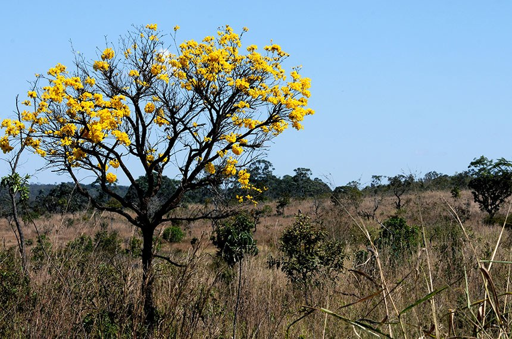

Notícias Cerrado
Destaque
A importância do Cerrado
É importante se conscientizar sobre a importância da conservação do segundo maior bioma da América do Sul...
Veja mais

Última entrevista
Entrevista com Marcelo Kuhlmann

O biólogo e doutor em botânica pela Universidade de Brasília (UnB) Marcelo Kuhlmann fala sobre os segredos do Cerrado.
Veja mais